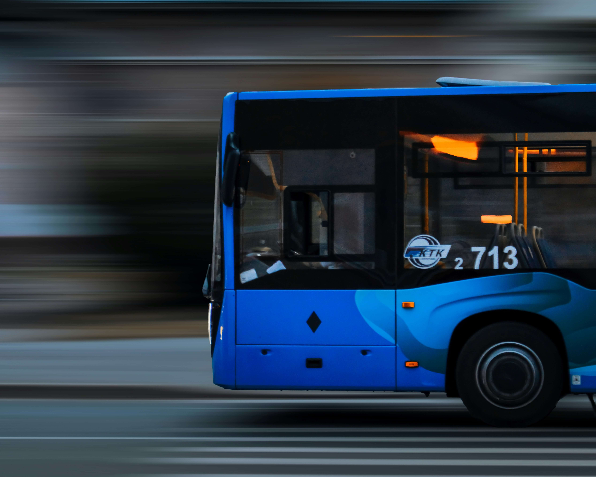
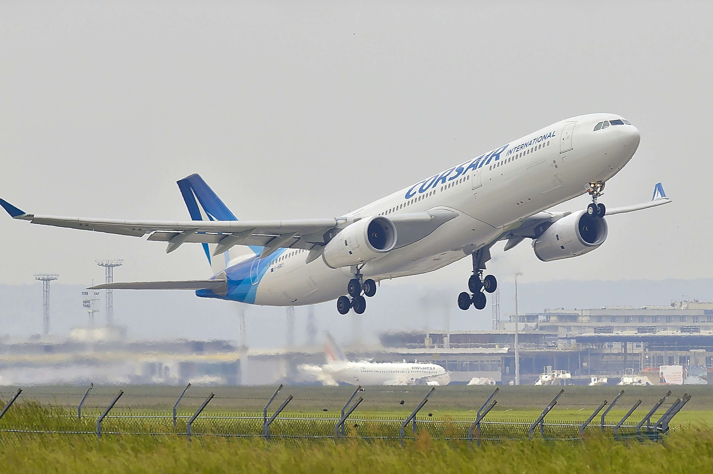
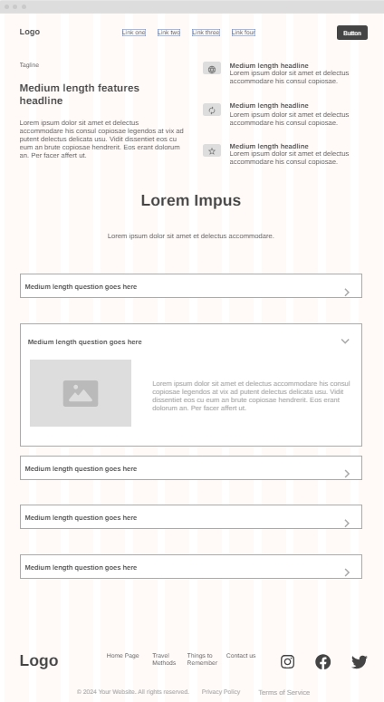

Overview
Purpose
The perpose of Travel•R is to inform college students in Rexburg pertaining to transportation. It delves into the best method compared to distance to cover, as well as estimated vehical and time.
Audience
The target audience is Rexburg college students. Specifically it is to those who want to know what would be the best way for them to get around. It can also be used by other residents of Rexburg, but is not as optimized for their use.
Branding
Website Logo

Style Guide
Color Palette
| Primary | Secondary | Accent 1 | Accent 2 |
|---|---|---|---|
Typography
Heading Font: Caveat
Paragraph Font: Nunito
Normal paragraph example
The best Transportation information, Travel•R offers recomended methods that can be used to travel, as well as pricing. Since 2025, we have been family friendly establishment, helping individuals or groups.
Colored paragraph example
Trips vary from mild and great for families, to trips exclusively for individuals and college students. No matter what type of travel or vacation you are seeking, Travel•R can guide you to wise traveling Choices.
Navigation
Site Map
Content
Home page
Main Page - Travel This page mainly speaks upon general questions users would have about traveling, speaking upon distance and the recommended Travel Method (redirecting them to that page), addresses worries one might have about traveling, things that you can do to keep travel costs down Traveling as a college student can be hard, so we are here to help. This webpage offers insight for your traveling needs, whether you are a constant traveler or a once-a-year kind of person. The Travel Methods page offers things you can consider when planning how to get somewhere, where the Things to Keep in Mind page has tips on what to bring with you. When traveling, it is important to consider three things. Distance, Time, and Cost. The Distance you travel will affect the time it will take to get there and the cost of vehicles. If you were to travel 200 miles for example, a Car would cost $44-$104 depending on if you are renting or own a car. A plane would cost $140-$200 from a trusted airline. If you are to travel 500 miles, a plane would cost around $200, where a car would be $208. The time that it takes to get to where you want to go can be very important when you do not have much time between studies and your schedule. To take less time, you may need to pay more. Planning ahead can help with this, as booking prices rise the closer it is to the travel date. What most of us are worrying about, the cost. To save on costs, we have to sacrifice other things. Personal space is a luxury that we may not have during travel. The time we have to spend in a car may also be greater. By using the way that has less demand, the price can be better.
Images for the Home page


Page - 1 Travel Methods
Page 1 - Travel Methods This page includes links to other websites, along with descriptions of Pros and Cons of the different ways of traveling. It will include BYU-I Travel board, Cars, Buses, Trains, and Planes. Some things it will speak upon are recommended group size, pricing, time it will take, quality.
Images for the Page 2
 Page - 2 Things to Keep in Mind
Page 2 - Things to Keep in Mind This page's purpose is to inform you on helpful things for traveling. Below is a packing list of do not forget essentials, a clothes calculator based on the time you will spend away, some good travel snack recommendations, and even a podcast & music link for entertainment purposes. Packing- We all forget something when we travel. You may not bring everything you need, but this should help in bringing the most important items. Keys, suitcase, purse/wallet, phone, laptop, towel, personal blanket/pillow, belt, video game, shoes, headphones, Thermostat, sunglasses, deodorant, toilet perfume, toothbrush, toothpaste, floss, Toilet paper (Works as tissues or napkins as well) For Guys Sandals, razor, cologne, For Gals Hair ties, makeup, feminine products, perfume Seasonal Coat, boots, umbrella, thermal undergarments Swimsuit, water shoes, flip flops, Ice pack, Snacks- We all need something to eat, especially if we have nothing better to do. Here are some recommended treats or meal ideas that are mostly clean and do not require much preparation. Sandwiches, Pasta Salad, Salad, Fruit and Nuts, Protein Shake, Energy Bar, Granola Bar, Dried Fruit, Nuts or Seeds, Cheese Sticks or Cubes, Crackers, C3 Vegetables- Carrots, Celery, Cucumbers, Popcorn, Chips, Pretzels Clothes Calculator- This is a simple calculator that will help you determine how many clothes you will need to bring based on the time you will be away. It will also help you determine how many of each type of clothing you will need. Podcast & Music- This is a link to a website that has a list of podcasts and music that you can listen to while you are traveling. It is a great way to pass the time and keep yourself entertained. Colledge Student Music Free Podcasts Church of Jesus Christ of Latter Day Saints Podcasts
Images for the Page 3

[TravelY (sister website, for sister school)]
[Written copy for the TravelY here]
Images for TravelY
Wireframes
Create three wireframes for your site. One for each page and list them here
Home
[Any additional details about home that the wireframe does not make clear]
[Page 2]
[Any additional details about page 2 that the wireframe does not make clear]
[Page 3]
[Any additional details about page 3 that the wireframe does not make clear]